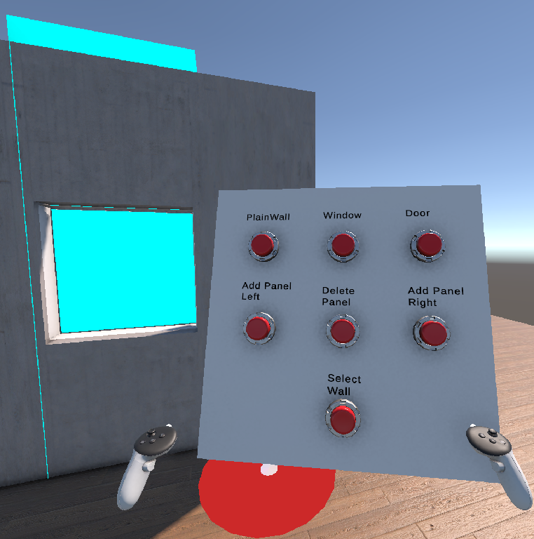
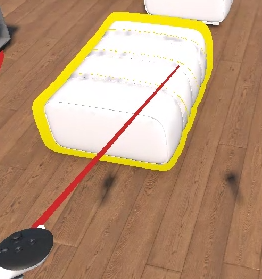
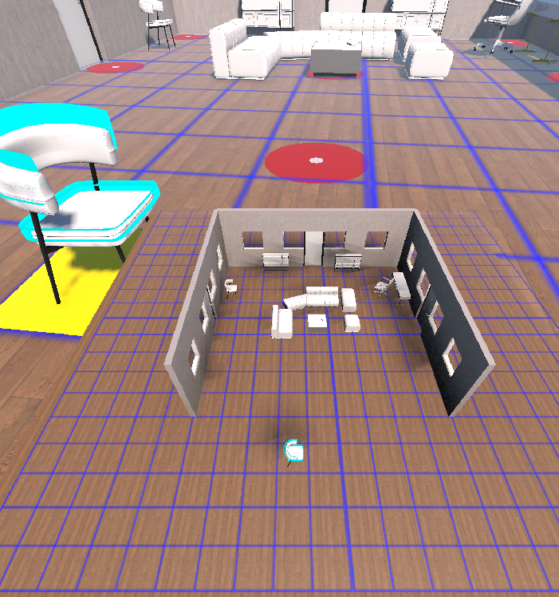
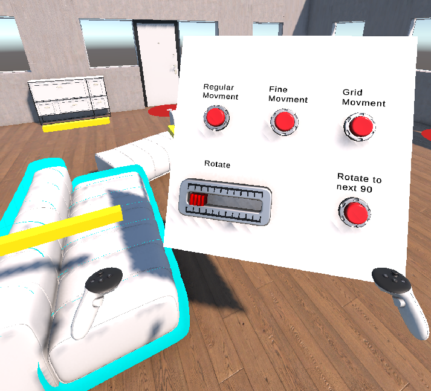

A VR-based interior design system that allows users to manipulate objects,
construct walls, edit modular panels, and navigate using ray selection,
widgets, and world-in-miniature visualization.
Project Images

Modular wall construction system with editable panels

VR ray selection and object highlighting system

World-in-miniature view for spatial navigation

Diegetic VR widget system for interaction modes
Project Videos
Teleportation & Furniture Interaction
Wall Panel Editing
Wall Creation and Manipulation
World-in-Miniature (WIM)
Extras
Features include grid-based movement, haptic feedback, modular wall editing,
VR ray interaction, and spatial navigation systems.